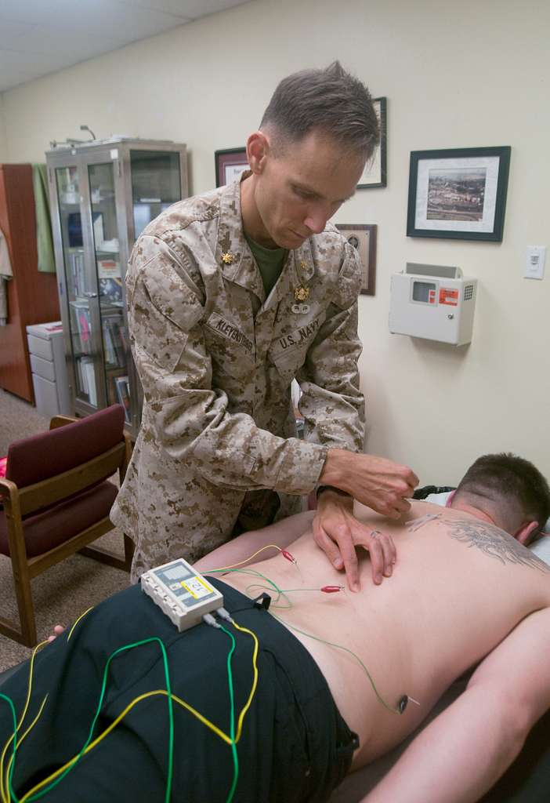
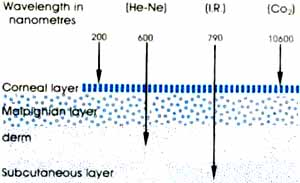
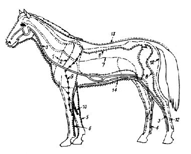

"Acupoints"
The discovery of distinct electrical properties of acupuncture points proved the actual material existence of acupoints and gave a reliable tool for point detection. Modern classification of acupoints includes:
361 Classical Chinese Points
171 Extra-Meridian Points
110 "New" Points
142 Auricular Points
Specific properties of Acupoints:
Electrical
Biochemical
Histological
Anatomical
More about "Acupoints"
The properties of acupuncture points and meridians have been investigated extensively over the past 50 years. Research has shown the acupuncture points to exhibit unique electrical, thermal and chemical properties:
Electrical Properties of acupuncture points:
High electric capacity (0.1-1 micro-farad).
High electric potential (up to 350mV).
Low electric resistance, explored either by DC or AC current (20 to 250 kilo-ohms). Acupuncture points have lower skin electrical resistance versus other sites on the body, that is, they conduct electrical current better.
The resistance changes with disease states, sleep, meals, physical exercise, and changes in the external environment, temperature, season, time of day, etc.
This lowered skin resistance is measurable EVEN AFTER DEATH AND EMBALMING, suggesting some intrinsic electrophysiologic quality to the tissue comprising acupoints.
Biochemical / Physiological Properties of acupuncture points:
There are measurable changes in the sodium/potassium concentration in an acupoint, at a depth under the skin, as compared to the tissue around the point.
Increased "cutaneous respiration" (great uptake of CO2 at the level of the points).
High local temperature.
Low threshold of painful sensitivity.
Histological Properties of acupuncture points:
On biopsies, there is a structure described as a "neurovascular hemolymphatic complex":
a plexus of arteriovenous capillaries;
a rich lymphatic drainage;
cutaneous nerves (myelinated and unmyelinated) emerging from deep fascia, from bone foramina, and motor points of neuromuscular attachments.
Acupuncture points are rich in Ab neural fibres (thick, medullated and fast) which are responsible for transmitting the touch and tactile signals.
They are poor in Ad (medullated), and c (non medullated) neural fibres (thinner, slower), which are responsible for transmitting the sensation of pain.
Specifically, Ad fibres are responsible for acute localised pain, while c fibres transmit diffused blunt pain.
This explains why acupuncture is generally painless; inactive acupuncture points do not have many neural fibre endings that transmit pain signals.
Anatomical Properties of acupuncture points:
The acupuncture points and meridians lie along the fascial planes, the cleavage or dividing planes between muscle groups and tissues.
Point maps correspond to motor points, neurovascular points, and trigger points.
References:
Darren Starwynn; Electrophysiology And The Acupuncture Systems; Medical Acupuncture, Volume 13 / Number 1
Harry Lazoura, Irena Cosic; Low Level Laser Radiation as a Stimulant in Acupuncture; 2nd International Conference on Bioelectromagnetism. p171-172. 1998.
Thalia Kritidou; Modern Neurophysiological Theories on the Effects of Acupuncture for the Treatment of Dental Pain; The Web-Journal of Acupuncture
Meridian Theory
Modern acupuncture respects the contemporary understanding of neuromuscular anatomy and pain physiology while embracing the classical Chinese perception of a subtle circulation network of a vivifying force called Qi. Although the notion of Qi appears too vague to the modern science, the meridian theory congregates more and more evidence and support from researchers.
We still use the term "meridians" which implies that they are "imaginary lines that connect acupuncture points", nevertheless the latest data reports in favor of material existence of conduits organized in an integrative system of a new kind. In the light of new publications the original term "channels" reacquires its meaning and importance.
In this sense, meridians do not connect acupoints but rather acupoints correspond to the most "condensed" segments of meridians (channels) where they emerge to the surface and where their activity can be influenced by local stimulation (needling etc).
More about Meridian Theory [Comments by Doctor Tatevian]
Since 1980, I have studied a wide range of the scientific literature as it relates to acupuncture retrospectively to the earliest medical texts. I also closely monitored new publications related to acupuncture.
Over the last 20 years, I witnessed the evolutions of the theoretical rationalization of acupuncture and how new studies often reversed or modified previous assumptions.
The first apprehensive attempts of the 1950s to scientifically explain acupuncture have developed into a wealth of scientific evidence that provides novel insights into the biological basis of Acupuncture and presents fragments of a new emerging scientific theory.
Along with my active professional experience and personal involvement in research, I am convinced of the validity of a new scientific paradigm that explicates the phenomenon of Acupuncture.
This is my attempt to bring a brief conceptual summary of the ideas that are now being expressed by scientists in the United States and worldwide.
The core of this new concept is the recognition of the material existence of an integrative system of a new kind that compliments and coexists with the nervous system, vascular system, lymphatic etc.
This new concept summarized in bullets presented below, is by no means a final product but rather my humble opinion and an invitation for discussion:
Points and Meridians are components of an integrative system of a new kind.
Its morphological substrate is connective tissue (dense and loose).
The Meridian System is composed of piezoelectric material and has an electromagnetic nature.
It facilitates organization and control within the organism
This system is responsible for three-dimensional orientation during embriogenesis.
It sustains structural integrity for the organs and the entire body.
Evolutionarily it is the oldest integrative system of multicellular organisms.
Toshiyuki Maeda, MD.
A Modern Engineering Study Demonstration Of The Existence Of A Control System In The Human Body Involving Traditional Chinese Medicine (TCM) Acupuncture Meridian Points.
Medical Acupuncture Journal; 2001- Volume 13 / Number 3.
Helene M. Langevin, David L. Churchill, Junru Wu, Gary J. Badger, Jason A. Yandow, James R. Fox, and Martin H. Krag Evidence of Connective Tissue Involvement in Acupuncture.
The FASEB Journal Express Article 10.1096/fj.01-0925fje Published online April 10, 2002
Amelia Lynn Dolson, MD.
Disease From A Pathologist Acupuncturist's Perspective: Linking Physical And Energetic To Spiritual.
Medical Acupuncture Journal; 2000- Volume 12 / Number 1
Meng Jinbi, Tian Jiahe;
In-vivo study of meridian-visceral connection and of six meridians in lower extremity of human by means of scintigraphic investigation of bladder; Web. Publ.;
Modern Innovations

Acupuncture needles remain to be the traditional and the most routinely used tool, sort of a "trade-mark".
However new technologies that have emerged over the last fifty years offer a wide spectrum of modalities and non-invasive techniques.
Among them to be mentioned are the methods that have earned credibility and recognition:
Acupuncture is a method of prevention, correction and treatment of a disease, illness, injury or pain by encouraging the body to promote natural healing and improve functioning.
This objective is implemented by stimulation of certain biologically active points on the surface of the body (acupuncture points).
These strategic points can be stimulated by the insertion of acupuncture needles or by non-invasive techniques and other means of physical stimulation.
A key feature of acupuncture as a kind of medical intervention is that there is no administration of any chemical substances in any form or delivery system.
Although the term "acupuncture" translates into English as "piercing the skin with a needle", and is habitually perceived in the US as an ancient art, this perception or perspective can be misleading. Acupuncture is a dynamic and developing field of medicine, which has earned worldwide recognition for its effectiveness.
Acupuncture needles remain the traditional and the most routinely used tool, but new technologies that have emerged over the last fifty years offer a wide spectrum of modalities.
The classification of techniques can be presented by the modes of stimulation:
Needling:
Lasers in Acupuncture
The latest contribution to acupuncture is the laser, the perfect example of the blend of state-of-the-art technology with ancient tradition.
This technique uses low energy laser beam (so-called "Cold Laser") to substitute acupuncture needle.
Lasers made for acupuncture are sophisticated and quite expensive devices that produce focused and coherent light beam of specific waive lengths of the spectrum.
The advantage is that this method is non-invasive, quick, absolutely painless, very safe, and provides fast clinical results.
More about "Acupoints"
Lasers are used to stimulate acupuncture points using the same rules of point selection as needle acupuncture. Laser acupuncture may be used solely or in combination with needles for any given condition over a course of treatment.
Laser is an abbreviation for "Light Amplification by Stimulated Emission of Radiation".
Lasers are unique sources of light; they do not behave like conventional thermal light sources. Briefly, it is a form of electromagnetic radiation, in the visible or infrared region of the light spectrum, generated by stimulating a medium (working substance), which may be solid or gaseous, under special conditions.
The beam of light, produced by LASER possesses distinctive physical properties:
Monochromaticity
Coherence
Little divergence
High irradiance
Monochromism describes a radiation of a very specific wavelength which spectographically presented by only one line. lasers produce the purest (most MONOCHROMATIC) light available.
The color of the laser radiation is of such a purity that practically never occurs in nature. Every laser has its specific wavelength (color).
Coherence relates to an extremely high degree of order of radiated light. It implies that all the emitted photons bear a constant phase relationship with each other in both time and space.
Little divergence means that all photons travel in the same direction; Laser beam does not disperse and remains much focused even projected on long distances.
High irradiance: because all the light is concentrated into a narrow spatial band light possesses high radiant power per unit area (i.e. high irradiance).
[About Laser Acupuncture]
Low Level Laser (soft laser) has definite advantages over needling the acupuncture points or trigger point injection:
It is aseptic, non-invasive, absolutely painless and, if used properly, has no reported side-effects.
It is ideal for use on painful (Ah-Shi) points or in patients with needle-phobia. Children tolerate laser acupuncture very well.
It is ideal for treatment of superficial acupuncture points, such as those on the ear.
Infrared Laser is a perfect (if not the only) tool for a double blind study in acupuncture research.
Laser acupuncture may be used solely or in combination with needles.
Laser Acupuncture usually is given at intervals of 1-3 days in acute cases and 3-7 days in chronic cases.
The selection of the acupuncture points is the same as for classical acupuncture.
At each session, the laser is applied for 20-60 seconds per point.
Total treatment time per session depends on mean output power (MOP) and the point depth.
Laser acupuncture is very useful in veterinary acupuncture practice . It is well tolerated by cats and nervous or difficult animals. It may be used safely on dangerous points in large animals (such as points below the carpus and tarsus of cattle and horses).
[Acupuncture Lasers]
The biological effects of Laser depend on power, wavelength, different pulse frequencies, different exposure dosage etc.
[Power]
Unlike high power surgical lasers that cause coagulation and "cut" tissues, acupuncture lasers produce laser beam of significantly lower intensity that cannot cause any structural damage to the tissues and operate in the safe range of power.
LLL (Low Level Laser, also called Low Energy Laser, or "cold" laser, or "soft" laser, or Low-Intensity laser) are laser devices in which power densities and energy densities of laser beam are lowered to a point where no photo thermal effects occur (the beam does not burn the tissues) but the photo-osmotic, photo-ionic and photo-enzymatic effects are still operative.
[Wavelength & penetration depth]
Laser light as it penetrates into the tissue, is reflected, absorbed and dispersed.
Penetration of laser into tissues falls off at an exponential fashion. Thus, increase of laser power does not result in a linear increase in the penetration into the tissues comprising acupuncture point and in a linear increase of biological effect.
The prime determinant of tissue penetration is the wavelength (color).
Every laser has its specific wavelength and penetrates accordingly.

Infra red lasers that operate in the invisible part if the spectrum penetrate deeper and are used in stimulation of acupuncture points instead of needling.
Red lasers (and others in visible light), which penetrate less deeply, are less suitable for acupuncture point stimulation and are best known for wound healing stimulation and for skin problems.
Infrared lasers are 5-10 times more expensive than red lasers.
[Pulsed lasers]
Though laser light is emitted in a continuous wave beam, it can be interrupted (modulated) at variable frequencies and intervals by mechanical or electronic means. Interruption of the light beam at fixed intervals is called pulsing.
Pulsed lasers penetrate deeper in tissue than unpulsed lasers. Pulsed lasers are several times more expensive than unpulsed lasers.
What Lasers Can Do:
Stimulates vasodilation to increase blood flow and circulation to an area.
Stimulates enkephalin and endorphins for pain control and nerve stimulation.
Increases the accumulation of prostaglandins in wounds to promote healing.
Promotes the formation of granulation tissue.
Stimulates the production of cartilage; enhances fibroplosia and collagen synthesis.
Stimulates RNA and DNA; increases ATP synthesis in the mitochondria by as much as 70%; influences the incorporation of labeled thymidine into DNA; increases autoradiographic uptake of labeled uridine.
Supports immune system; increases the T & B-lymphocytes in people with a suppressed immune system; increases the ability and frequency to bind with bacteria.
(Source: Jennifer Blahnik; Laser Acupuncture in Clinical Practice; April 12, 1997.)
Microsystems
According to the principle of fractalisation, an organism creates numerous quantum copies of itself with the projection on localized areas of the body like feet, ears, hands, iris, scalp etc.
These areas called Microsystems represent the whole body scheme, with codes of its anatomical structure, space and time development, and functions of organs and systems.
Like “remote controls”, they can be employed for diagnosis and therapeutic intervention. The number of Microsystems grows, with their specific features, conveniences, advantages, and limitations.
More about Microsystems
Microacupuncture systems are one of the manifestations of fractalization, the universal principle of self-organization in nature.
The number of possible microsystems is unlimited.
Resolution of a microsystem and its influence on the organism depend on the size of its projection on the surface of skin, mucous membrane and periosteum.
This influence is the most effective in the points of the classical acupuncture meridians.
The fractal-field theory of the microacupuncture systems needs the elaboration of the physiological mechanism for the medical effect realization.
Auricular Acupuncture
The use of auricular acupuncture as an effective, low-risk therapeutic option. Auriculotherapy is a sophisticated discipline of acupuncture that can be studied to a refined level of precision. Auriculotherapy is well suited for painful conditions, however, adequate skills necessary for safe and effective treatment. It may be used as a sole treatment or may be combined with classical acupuncture.
Historical Background
Examples of treatments using points on the ear are found throughout the literature of many ancient cultures, including Chinese and Persian medical writings as well as Egyptian tomb paintings. The Hippocratic writings discuss cauterization and bleeding of the ear.
European medical publications in the 17th and 18th centuries reported the use of ear cautery to treat dental neuralgia and sciatica.
The scientific exploration and systematic charting of the auricular correspondences were undertaken by Paul Nogier, a French neurophysiologist, starting in the early 1950s. Nogier's teachings and publications were disseminated from France to Germany, and from Germany to China by way of Japan.
In the United States, the precision of the somatotopic mapping was verified in a blinded experiment, showing 92% concordance between established medical diagnoses and auricular diagnoses.
Neuroanatomy of the External Ear
The external ear develops from embryonic gill plates. It is structured of tissue from each of the 3 embryonic layers: ectoderm, mesoderm, and endoderm. It has a dense and complex nervous innervation including the greater auricular nerve (C1, C2, C3), auriculotemporal branch of the trigeminal nerve (CN V), which has sympathetic fibers, the auricular branch of the vagus nerve (CN X), which has parasympathetic fibers, as well as the facial (CN VII) and the glossopharyngeal nerve (CN IX).
Physiological Basis of Auricular Acupuncture
Auricular acupuncture is based on a reflex somatotopic system organized on the surface of the external ear, one of many such microsystems on the body.
The speculative neuroanatomical model of this microsystem consists of projections from visceral or somatic organs and their somatotopic projections onto a modulating center in the brain. Afferent signals from each organ after arriving at this central modulating center trigger a change in the corresponding somatotopic focus on the surface of the ear. This change may be detected as a decreased sensory threshold or decreased electrical resistance at the somatotopic focus.
Alternatively, stimulation of the somatotopic focus may either modulate afferent signals from the corresponding organ (Gate Control Theory), or through its effect on the central modulating center, trigger a change in the cerebral cortex or the end organ itself. The brainstem reticular formation with its inhibitory and excitatory influences on ascending and descending sensory, motor, and autonomic impulses, appears to be the most likely central modulating center.
With or without a defined scientific mechanism of action, the auricular microsystem is useful as a diagnostic and therapeutic modality. Related articles: Auriculotherapy: As Enduring as Ever; by Noele A. Stuart, AP
Korean Hand Acupuncture (ERA)
Historical Background
Korean Hand Acupuncture (ERA) was developed by Dr. Tae-Woo-Yoo in 1971. The validity of Dr. Yoo's map was addressed by Dr. M.H. Cho in 1980. A similar approach was carried by Dr. Yasu Mitsuo in Japan, using thermography to objectively demonstrate the warming of the predicted corresponding body parts by either moxibustion or needling at the KHA hand acupoints.
Physiological Basis
In 1987, Professor Imura of the Japanese Department of Health reported on an experiment treating joint injuries with KHA in the Journal "Ido No Nippon". Treating random points produced a 19.5 % success rate, which may be taken as a measure of the placebo response. But using just the sensitive points in the KHA corresponding areas produced a success rate of 69.5%.
Having demonstrated that the KHA microsystem utilizes a reliable map, and that the traditional beliefs of Oriental medicine alluded to in the previous paragraph can be objectively demonstrated using KHA, we are still no closer to accounting for its physiological mechanism.
Dr. Yoo believes that the answers must be sought after in the nervous system and the circulatory system. A preliminary experiment showed that moxibustion at specific KHA points could selectively augment the Alpha-2 wave amplitude of an EEG, suggesting the involvement of the brain in mediating effects of KHA.
Recommended article:
"THE PHYSIOLOGICAL BASES OF ACUPUNCTURE MICROSYSTEMS; By PETER ECKMAN, M.D.
Yamamoto New Scalp Aupuncture (YNSA)
Historical Background
Dr. Toshikatsu Yamamoto of Nishinan, Japan, founded and developed a new form of acupuncture in 1970 while working in a small hospital in South Japan (Nishinan). It was first reported at the 25th annual meeting of the Japanese Society of Ryodoraku in Osaka, Japan, in 1973. To distinguish his method from the earlier Chinese Scalp acupuncture, he added the word NEW after his name.
A further development of the YNSA was discovered by the AITNA-YNSA Germany (Ansbach Institute for Transcranial Neuroacupuncture). The AITNA-YNSA Germany discovered that the chin and cheek somatotopes exist in both the Yin and Yang form. This was the logical continuation of the YNSA system.
Physiological Basis
This micro acupuncture system is different from traditional Chinese acupuncture and Chinese scalp acupuncture. It is both a diagnostic and interactive treatment system in relieving both somatic and visceral pain problems, as well as balancing Qi.
YNSA provides a sophisticated diagnostic method and an immediate feedback after correctly placing the acupuncture needles or other transactional stimulation procedures such as s-c injection of normal saline, xylocaine, electrical stimulation, local pressure or Laser energy. This constant interchange between the probing physician and feedback from the patient`s body enables the practitioner to diagnose and treat a wide variety of clinical problems.
Recommended articles:
YAMAMOTO NEW SCALP ACUPUNCTURE (YNSA); by Aristarchos Raftis, MD, PhD.
Yamamoto New Scalp Acupuncture; reviewed By David P. Sniezek, MD
Acupuncture & Animals
The discovery of electrical properties of acupoints fifty years ago allowed locating them on animals.
Acupuncture points are identified and mapped for dogs, cows, horses, cats, pigs, elephants, and animals of all kinds.
One of the first known acupuncture experiments on animals was done in France in early 1960-th. Acupuncture was used on cows to increase milk production.
The same basic concept has been adopted to help breastfeeding mothers with milk production deficiency.
The fact that acupuncture worked on animals was the first evidence that it is not psychological treatment. Extensive scientific research made great advances in comprehending intrinsic physiological mechanisms of acupuncture. There is no more psychological than in any other form of medicine.
More about Acupuncture & Animals
It is no longer unusual for acupuncture to be used to treat animals ranging from pampered pooches to champion racehorses. Today, veterinary acupuncture is an acknowledged and respected field of medicine which requires formal training and certification in order to practice. One of its strong suits as a treatment choice is that there are rarely any harmful side effects - something that can't be said for drugs and surgeries.
It gained popularity in the USA during the Nixon era after symposium entitled, "Acupuncture for the Veterinarian" held in the United States in 1974.
In most States, provinces and countries, veterinary acupuncture is considered a surgical procedure that, legally, may ONLY be performed by a licensed doctor of veterinary medicine.
Most veterinary acupuncturists in North America and Europe use a combination of techniques to stimulate acupuncture points. They use traditional acupuncture (the thin, sterilized, stainless-steel needles), electro-acupuncture (current), Low Energy Laser stimulation, acupoint injections (injection of saline, vitamin B12 etc. with a hypodermic needle into the acupuncture point).
Laser stimulation is popular in veterinary acupuncture because animals are more likely to move during treatment, which makes it difficult to maintain acupuncture needles in certain points.
Fascinating experiments to show the existence of acupuncture points on animals have been performed by Dr. Kvirshishvili on rabbits and Dr. Kothbauer on cattle.
Kvirshishvili observed the ears of rabbits and identified auricular points thus confirming the theory of auricular acupuncture.
Kothbauer studied the acupuncture points on the backs of cows and, in later clinical use, he confirmed the therapeutic value of these acupuncture or "pain" points in cows.
Here are 2 charts demonstrating acupuncture meridians and points for horses:

Here is a chart demonstrating acupuncture meridians and points for pigs:
Here is a chart demonstrating acupuncture meridians and points for a chicken:
Here is a chart demonstrating acupoints for an Indian elephant:
From the book "The Puncture Reflexotherapy (Tsienn-Tsieu-therapy), 1988; by V.G.Vogralik and M.V. Vogralik. They make reference to Nill.
Overstimulation of the points marked on the chart by darker circles can be lethal to the animal. Some other points are used in training for commands such as "kneel down, move forward or backward, turn left or right, stop", etc.
This topography of points is known and used on Indian elephants.
Last updated: 19-July-2024
Copyright Policy
Please, feel free to copy and use this material with the proper reference. This courtesy is expected. Thank you.
This page last updated: 19-July-2024

 According to the principle of fractalisation, an organism creates numerous quantum copies of itself with the projection on localized areas of the body like feet, ears, hands, iris, scalp etc.
According to the principle of fractalisation, an organism creates numerous quantum copies of itself with the projection on localized areas of the body like feet, ears, hands, iris, scalp etc.